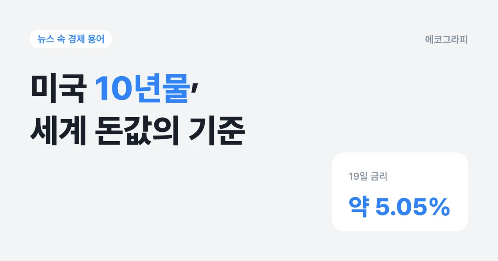
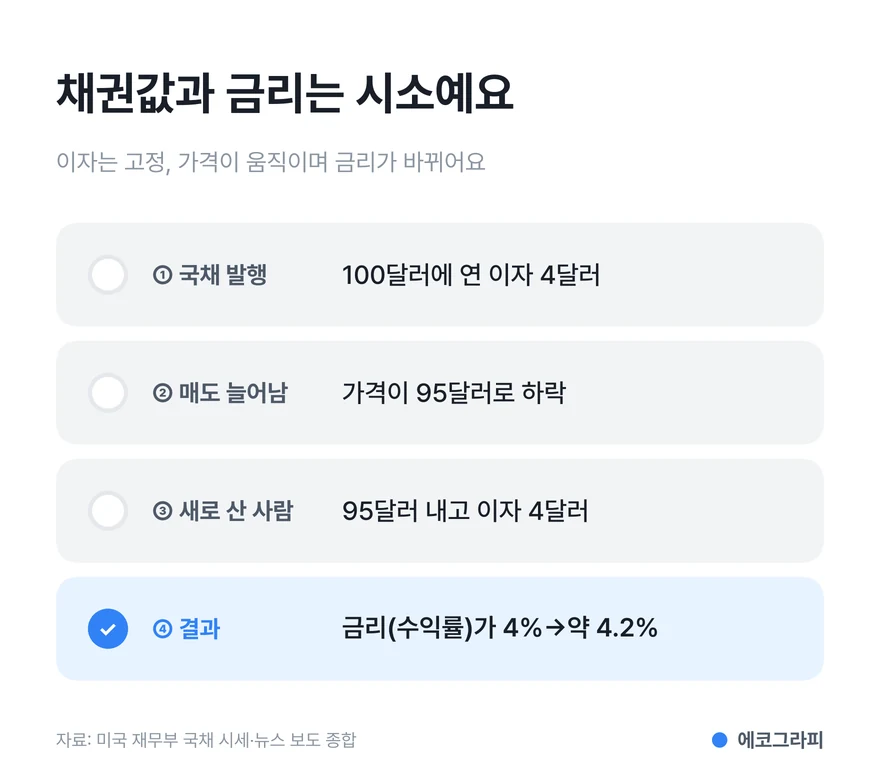
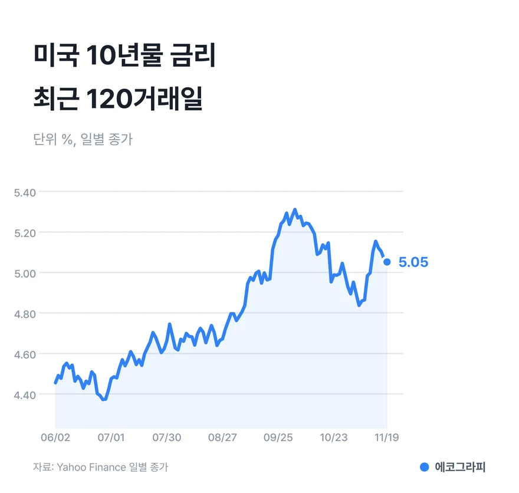
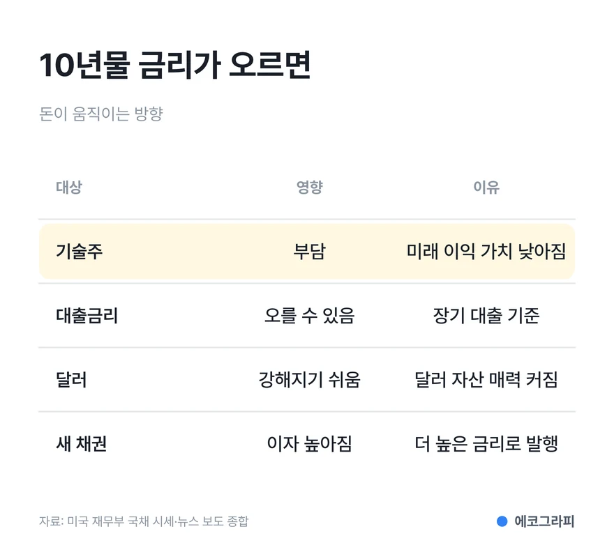
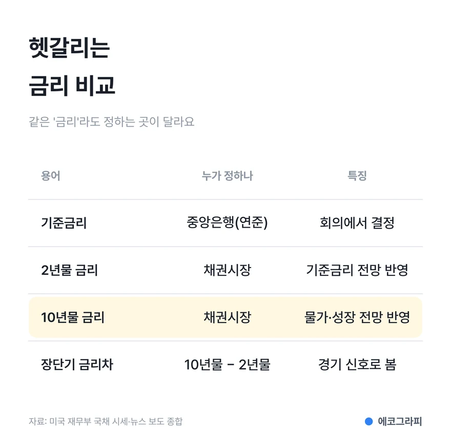

19일(현지) 뉴욕증시는 세 지수가 모두 2% 넘게 빠졌어요. 기사들은 AI 기업 앤스로픽 상장 소식과 함께 "금리 5%의 벽"을 이야기했어요. 여기서 말하는 금리가 바로 미국 10년물 국채금리예요. 어제 시장 흐름은 오늘 아침 시황에 정리했어요.
미국 10년물 국채금리: 미국 정부가 10년 뒤에 갚기로 하고 빌린 돈(국채)을 지금 시장에서 샀을 때 1년에 몇 %의 수익을 얻는지를 나타낸 숫자예요.
핵심은 채권 가격과 금리가 시소처럼 반대로 움직인다는 점이에요. 국채의 이자는 처음에 정해져 있어요. 그런데 국채를 팔려는 사람이 많아지면 가격이 내려가고, 싸게 산 사람은 같은 이자를 받으니 수익률이 올라가요. 뉴스에서 "국채금리 상승"은 곧 "국채 가격 하락"이라는 뜻이에요.

10년물은 기간이 길어서, 앞으로 물가와 경제가 어떻게 될지에 대한 시장의 생각이 담겨요. 물가가 계속 높을 것 같으면 투자자들은 더 높은 이자를 요구하고, 금리가 올라가요.
지난 10일(현지)에는 10월 소비자물가가 예상보다 높게 나오자 10년물 금리가 장중 5%를 다시 넘었어요. 이후 5.0~5.1% 사이를 오가고 있고, 19일엔 약 5.05%로 마감했어요. 연준의 기준금리는 연 3.75~4.00%인데, 시장에선 12월에 0.25%p 올릴 가능성을 높게 보고 있어요.


기억할 것: 미국 10년물 금리는 전 세계 자산 가격의 기준점이에요. 주식 뉴스를 볼 때 이 숫자가 오르는지 내리는지 함께 보면 시장 분위기를 이해하기 쉬워요.

기준금리는 연준이 회의에서 직접 정하는 금리예요. 반면 국채금리는 채권시장에서 사고파는 사람들이 매일 만들어 내요. 2년물은 가까운 미래의 기준금리 전망을, 10년물은 더 긴 물가·성장 전망을 주로 반영해요.
정부가 정하는 게 아니라, 시장에서 국채를 사고파는 가격에 따라 매일 바뀌어요. 국채 가격이 내리면 금리는 올라가요.
10년물은 거래가 가장 활발하고, 대출·기업 가치 평가 등 여러 금리의 기준으로 많이 쓰여서 대표 지표로 자리 잡았어요.
최근 십여 년과 비교하면 높은 편이에요. 그래서 뉴스에서 5%를 '벽'이나 '심리적 기준선'처럼 표현해요.
증권사를 통해 미국 국채나 국채 ETF에 투자할 수 있어요. 다만 금리가 오르면 이미 가진 채권 가격은 내려가고, 환율 변동도 함께 받는다는 점을 알아 두세요.
※ 2026년 11월 기준으로 정리한 글입니다. 세율·제도는 바뀔 수 있으니 거래 전 증권사·국세청 안내를 한 번 더 확인하세요. 특정 종목·상품의 매수·매도 권유가 아닙니다.